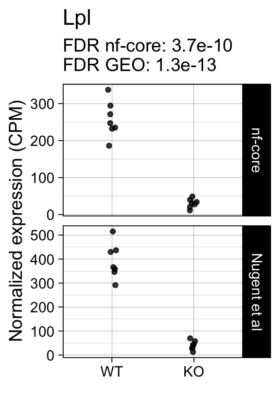
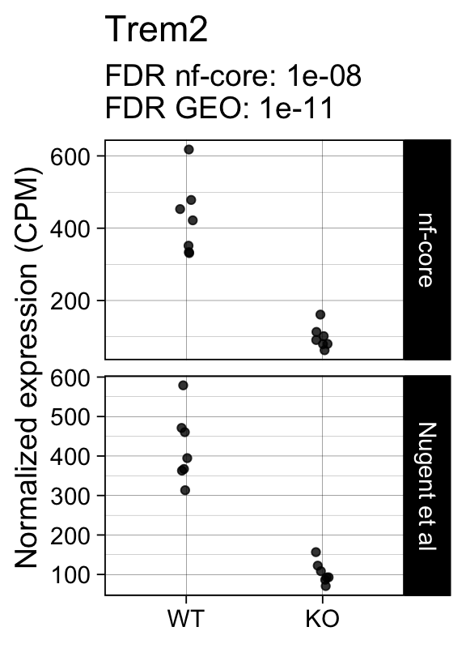
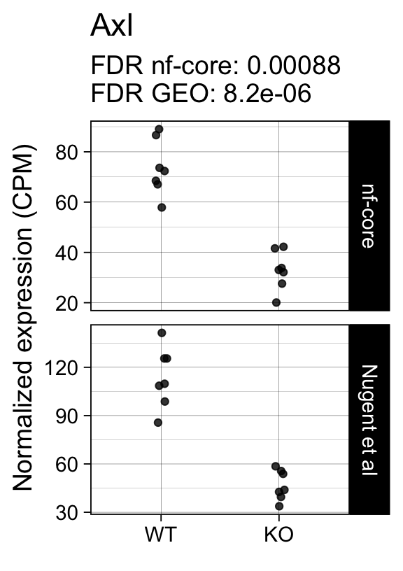
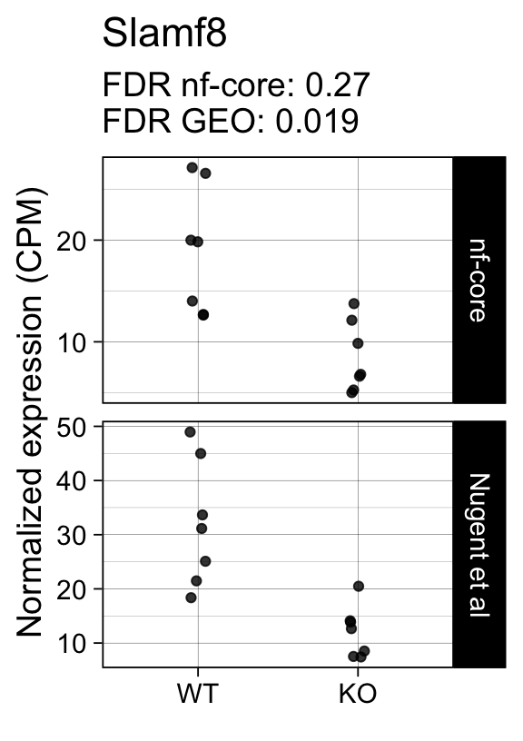

library(dplyr)
library(edgeR)
library(ggplot2)
library(here)
library(org.Mm.eg.db)
library(SummarizedExperiment)
library(tibble)
library(tidyr)
Note
This is the fourth of four posts documenting my progress toward processing and analyzing QuantSeq FWD 3’ tag RNAseq data with the nf-core/rnaseq workflow.
- Configuring & executing the nf-core/rnaseq workflow
- Exploring the workflow outputs
- Validating the workflow by reproducing results published by Xia et al (no UMIs)
- Validating the workflow by reproducing results published by Nugent et al (including UMIs)
Many thanks to Harshil Patel, António Miguel de Jesus Domingues and Matthias Zepper for their generous guidance & input via nf-core slack. (Any mistakes are mine.)
tl;dr
- This analysis compares the performance of the nf-core/rnaseq workflow for QuantSeq FWD 3’ tag RNAseq data with unique molecular identifiers (UMIs).
- The differential expression analysis results are highly concordant with those obtained in the original publication.
- With the appropriate settings, the nf-core/rnaseq workflow is a valid data processing pipeline for this data type.
The first post in this series walked through the preprocesssing of QuantSeq FWD data published in a preprint by Nugent et al, 2020, who used the QuantSeq FWD library preparation protocol and added unique molecular identifiers (UMIs). The UMIs were used to identify and remove PCR duplicates during the data preprocessing steps.
Here, we use Bioconductor/R packages to reproduce the downstream results. We perform the same analysis twice with either
- the original counts matrix published by the authors 1
- the output of the nf-core/rnaseq workflow
Sample annotations
We start by retrieving the sample annotation table, listing e.g. the sex, and genotype for each mouse, and the batch for each collected sample.
This information is available in the SRA Run Explorer. (I saved it in the sample_metadata.csv CSV file if you want to follow along>.
sample_sheet <- file.path(work_dir, "sample_metadata.csv")
sample_anno <- read.csv(sample_sheet, row.names = "Experiment")
head(sample_anno[, c("Run", "Animal.ID", "Age", "age_unit", "Cell_type",
"sex", "Genotype", "Sample.Name")]) Run Animal.ID Age age_unit Cell_type sex Genotype
SRX6420531 SRR9659551 IL1 2 months astrocyte female TREM2 +/+
SRX6420532 SRR9659552 IL1 2 months microglia female TREM2 +/+
SRX6420533 SRR9659553 IL10 2 months astrocyte female TREM2 -/-
SRX6420534 SRR9659554 IL10 2 months microglia female TREM2 -/-
SRX6420535 SRR9659555 IL11 16 months astrocyte female TREM2 +/+
SRX6420536 SRR9659556 IL11 16 months microglia female TREM2 +/+
Sample.Name
SRX6420531 GSM3933549
SRX6420532 GSM3933550
SRX6420533 GSM3933551
SRX6420534 GSM3933552
SRX6420535 GSM3933553
SRX6420536 GSM3933554Because our SRA metadata doesn’t include the GEO sample title, I saved the identifier mappings in the GEO_sample_ids.csv CSV file.
geo_ids <- read.csv(file.path(work_dir, "GEO_sample_ids.csv"))
head(geo_ids) sample_name sample_id
1 GSM3933549 IL1_A
2 GSM3933550 IL1_M
3 GSM3933551 IL10_A
4 GSM3933552 IL10_M
5 GSM3933553 IL11_A
6 GSM3933554 IL11_MCode
colnames(sample_anno)<- tolower(colnames(sample_anno))
colnames(sample_anno) <- sub(".", "_", colnames(sample_anno),
fixed = TRUE)
sample_anno <- sample_anno[, c("sample_name", "animal_id", "genotype", "sex",
"age", "cell_type")]
sample_anno$genotype <- factor(sample_anno$genotype,
levels = c("TREM2 +/+", "TREM2 -/-"))
sample_anno$genotype <- dplyr::recode_factor(
sample_anno$genotype,"TREM2 +/+" = "WT", "TREM2 -/-" = "KO")
sample_anno$age <- factor(sample_anno$age)
sample_anno$sample_title <- geo_ids[
match(sample_anno$sample_name, geo_ids$sample_name), "sample_id"]
head(sample_anno) sample_name animal_id genotype sex age cell_type sample_title
SRX6420531 GSM3933549 IL1 WT female 2 astrocyte IL1_A
SRX6420532 GSM3933550 IL1 WT female 2 microglia IL1_M
SRX6420533 GSM3933551 IL10 KO female 2 astrocyte IL10_A
SRX6420534 GSM3933552 IL10 KO female 2 microglia IL10_M
SRX6420535 GSM3933553 IL11 WT female 16 astrocyte IL11_A
SRX6420536 GSM3933554 IL11 WT female 16 microglia IL11_MThis experiment includes 56 samples of astrocytes or microglia cells obtained from 28 female mice that were either 2- or 16 months of age.
The animals are either wildtype (WT) or homozygous knockouts (KO) for the Trem2 gene.
Nugent et al’s original count data
First, we retrieve the authors’ count matrix from NCBI GEO, available as a Supplementary tab-delimited text file.
geo_url <- paste0("https://www.ncbi.nlm.nih.gov/geo/download/?acc=GSE134031&",
"format=file&file=GSE134031%5FDST120%2Etab%2Egz")
raw_counts <- read.delim(textConnection(readLines(gzcon(url(geo_url)))))
head(colnames(raw_counts), 10) [1] "mgi_symbol" "gene_biotype"
[3] "ensembl_gene_id_version" "IL1_A"
[5] "IL1_M" "IL10_A"
[7] "IL10_M" "IL11_A"
[9] "IL11_M" "IL12_A" The raw_counts data.frame contains information about the detected genes ( mgi_symbol, ensembl_gene_id_version) and the samples are identified by a shorthand of their GEO title (e.g. IL1_M, IL1_A).
We use the raw counts to populate a new DGEList object and perform Library Size Normalization with the TMM approach.
Code
count_data <- as.matrix(raw_counts[, grep("^IL", colnames(raw_counts))])
row.names(count_data) <- raw_counts$ensembl_gene_id_version
colnames(count_data) <- row.names(sample_anno)[
match(colnames(count_data), sample_anno$sample_title)
]
gene_data <- data.frame(
gene_id = raw_counts$ensembl_gene_id_version,
gene_name = raw_counts$mgi_symbol,
row.names = raw_counts$ensembl_gene_id_version
)
col_data <- data.frame(
sample_anno[colnames(count_data),
c("sample_title", "animal_id", "age", "genotype", "cell_type")],
workflow = "geo"
)
dge <- DGEList(
counts = as.matrix(count_data),
samples = col_data[colnames(count_data), ],
genes = gene_data[row.names(count_data), ]
)
dge <- calcNormFactors(dge, method = "TMM")This is a large dataset, containing e.g. samples from two different cell types (microglia and astrocytes) and two different age groups (2 and 16 months).
Here, we will restrict the analysis to microglia samples collected from older animals.
dge <- dge[, dge$samples$cell_type == "microglia" & dge$samples$age == "16"]Let’s identify which genes are significantly differentially expressed between the two genotypes!
Linear modeling with limma/voom
First, we use the edgeR::filterByExpr() function to identify genes with sufficiently large counts to be examined for differential expression.
design <- model.matrix(~ genotype, data = dge$samples)
colnames(design) <- sub("genotype", "", colnames(design))
keep <- filterByExpr(dge, design = design)Next, we fit a linear model to the data using the limma/voom approach. The model only includes the genotype (with WT as the reference level) as a fixed effect.
fit <- voomLmFit(
dge[keep, row.names(design)],
design = design,
sample.weights = TRUE,
plot = FALSE
)
fit <- eBayes(fit, robust=TRUE)The following table displays the number of differentially up- and down-regulated genes after applying a false-discovery (adj.P.Val) threshold of 5%. We detect significant differences between KO and WT animals in a small number of genes
summary(decideTests(fit)[, "KO"]) KO
Down 10
NotSig 6343
Up 2The top 10 genes with the smallest p-values include well known markers of microglia activation:
topTreat(fit, coef = "KO")[, c("gene_name", "logFC", "P.Value", "adj.P.Val")] gene_name logFC P.Value adj.P.Val
ENSMUSG00000015568.16 Lpl -3.1524285 2.088121e-17 1.327001e-13
ENSMUSG00000023992.14 Trem2 -2.0556690 3.260855e-15 1.036137e-11
ENSMUSG00000079293.11 Clec7a -1.5285199 9.357950e-12 1.982326e-08
ENSMUSG00000029304.14 Spp1 -4.6265897 4.968572e-10 7.893819e-07
ENSMUSG00000003418.11 St8sia6 -1.6639344 7.279411e-09 8.240295e-06
ENSMUSG00000002602.16 Axl -1.2096969 7.779979e-09 8.240295e-06
ENSMUSG00000068129.5 Cst7 -2.0966828 9.881687e-08 8.971160e-05
ENSMUSG00000008845.9 Cd163 0.8165263 1.513307e-06 1.202133e-03
ENSMUSG00000039109.16 F13a1 0.8081490 1.735344e-06 1.225345e-03
ENSMUSG00000000682.7 Cd52 -0.7939756 4.846100e-06 3.079696e-03Next we repeat the same analysis with the output of the nf-core/rnaseq workflow.
nf-core/rnaseq results
We start with the raw counts contained in the salmon.merged.gene_counts.rds file generated by the nf-core/rnaseq workflow.
We TMM-normalize the data, as before. (This step converts the SummarizedExperiment into a `DGEList object as well.)
count_file <- file.path(work_dir, "salmon.merged.gene_counts.rds")
se <- readRDS(count_file)
stopifnot(all(colnames(se) %in% row.names(sample_anno)))
dge_nfcore <- calcNormFactors(se, method = "TMM")Next, we add the sample metadata and fit the same linear model as before.
Code
dge_nfcore$samples <- data.frame(
dge_nfcore$samples,
sample_anno[colnames(dge_nfcore),
c("sample_title", "animal_id", "age", "genotype", "cell_type")],
workflow = "nfcore"
)
stopifnot(all(colnames(dge) %in% colnames(dge_nfcore)))
dge_nfcore <- dge_nfcore[, colnames(dge)]
design <- model.matrix(~ genotype, data = dge_nfcore$samples)
colnames(design) <- sub("genotype", "", colnames(design))
keep <- filterByExpr(dge_nfcore, design = design)
fit_nfcore <- voomLmFit(
dge_nfcore[keep, row.names(design)],
design = design,
sample.weights = TRUE,
plot = FALSE
)First sample weights (min/max) 0.3858285/1.6444242Final sample weights (min/max) 0.3854635/1.6427464Code
fit_nfcore <- eBayes(fit_nfcore, robust=TRUE)As with the original count data from NCBI GEO, we detect small number of differentially expressed genes (FDR < 5%).
summary(decideTests(fit_nfcore)[, "KO"]) KO
Down 10
NotSig 7824
Up 2Code
cpms <- local({
geo <- cpm(dge, normalized.lib.sizes = TRUE) %>%
as.data.frame() %>%
cbind(dge$genes) %>%
pivot_longer(cols = starts_with("SRX"),
names_to = "sample_name",
values_to = "cpm") %>%
dplyr::left_join(
tibble::rownames_to_column(dge$samples, "sample_name"),
by = "sample_name"
) %>%
dplyr::mutate(dataset = "Nugent et al")
nfcore <- cpm(dge_nfcore, normalized.lib.sizes = TRUE) %>%
as.data.frame() %>%
cbind(dge_nfcore$genes) %>%
pivot_longer(cols = starts_with("SRX"),
names_to = "sample_name",
values_to = "cpm") %>%
dplyr::left_join(
tibble::rownames_to_column(dge_nfcore$samples, "sample_name"),
by = "sample_name"
) %>%
dplyr::mutate(dataset = "nf-core")
dplyr::bind_rows(
dplyr::select(geo, any_of(intersect(colnames(geo), colnames(nfcore)))),
dplyr::select(nfcore, any_of(intersect(colnames(geo), colnames(nfcore))))
)
})
tt <- rbind(
topTreat(fit, coef = "KO", number = Inf)[
, c("gene_id", "gene_name", "logFC", "P.Value", "adj.P.Val")] %>%
dplyr::mutate(dataset = "geo"),
topTreat(fit_nfcore, coef = "KO", number = Inf)[
, c("gene_id", "gene_name", "logFC", "P.Value", "adj.P.Val")] %>%
dplyr::mutate(dataset = "nfcore")
) %>%
dplyr::mutate(adj.P.Val = signif(adj.P.Val, 2)) %>%
tidyr::pivot_wider(
id_cols = c("gene_id", "gene_name"),
names_from = "dataset",
values_from = "adj.P.Val") %>%
dplyr::arrange(nfcore) %>%
as.data.frame() %>%
tibble::column_to_rownames("gene_id")Normalized expression
First, we examine the correlation between the normalized log-transformed gene expression estimates returned from the two workflows. We focus on those genes that passed the filterByExpr thresholds above, e.g. those genes deemed sufficiently highly expressed to be assessed for differential expression.
common_genes <- intersect(row.names(fit), row.names(fit_nfcore))
sum_stats <- cpms %>%
dplyr::filter(gene_id %in% common_genes) %>%
tidyr::pivot_wider(
id_cols = c("gene_id", "sample_name"),
values_from = "cpm",
names_from = "dataset") %>%
dplyr::group_by(gene_id) %>%
dplyr::summarise(
r = cor(log1p(`Nugent et al`), log1p(`nf-core`)),
mean_nugent = mean(`Nugent et al`),
mean_nfcore = mean(`nf-core`))
p <- ggplot(data = sum_stats, aes(x = r)) +
geom_histogram(bins = 50) +
scale_x_continuous(limits = c(0, 1.02), breaks = seq(0, 1, by = 0.2)) +
labs(x = "Pearson correlation coefficient (R)",
y = "Number of genes",
title = "Correlation between normalized log2 counts") +
theme_linedraw(14)
print(p)Warning: Removed 35 rows containing non-finite values (`stat_bin()`).Warning: Removed 2 rows containing missing values (`geom_bar()`).The correlation between normalized log2 expression estimates is reasonably high, e.g. 80% of all genes showing a Pearson correlation coefficient > 0.82.
The relatively low correlation might reflect the low RNA input of this experiment, e.g. only 6314 of the genes genes were detected with > 10 UMI-corrected normalized counts per million reads.
p <- ggplot(data = sum_stats, aes(x = mean_nugent + 1)) +
geom_histogram(bins = 50) +
scale_x_continuous(trans = scales::log10_trans(),
labels = scales::comma_format()) +
labs(x = "Mean normalized counts per million",
y = "Number of genes",
title = "Average expression",
subtitle = "Nugent et al") +
theme_linedraw(14)
print(p)Next, we will examine the results of the differential expression analysis.
Differential expression results
Analyses based on either preprocessing pipeline yield similar numbers of differentially expressed genes.
Code
common_genes <- intersect(row.names(fit), row.names(fit_nfcore))
results <- cbind(
decideTests(fit)[common_genes, "KO"],
decideTests(fit_nfcore)[common_genes, "KO"]
)
colnames(results) <- c("Nugent et al", "nf-core")
class(results) <- "TestResults"
summary(results) Nugent et al nf-core
-1 10 9
0 6302 6303
1 2 2But are these the same genes in both sets of results?
We can visualize the overlap between the sets of significant genes in a Venn diagram (FDR < 5%). The majority of differentially expressed genes is detected with both quantitation approaches (for both up- and down-regulated genes.)
limma::vennDiagram(results, include = c("up", "down"),
counts.col=c("red", "blue"), mar = rep(0,4))For example, the following plots show the normalized expression of the most significantly differentially expressed genes (known markers of active microglia).
Code
for (gene in topTreat(fit, coef = "KO", number = 6)[["gene_id"]]) {
p <- cpms %>%
dplyr::filter(gene_id == gene) %>%
ggplot(aes(x = genotype, y = cpm)) +
geom_point(position = position_jitter(width = 0.05), alpha = 0.8) +
facet_grid(dataset ~ ., scales = "free") +
labs(title = dge$genes[gene, "gene_name"],
y = "Normalized expression (CPM)",
x = element_blank(),
subtitle = sprintf("FDR nf-core: %s\nFDR GEO: %s",
tt[gene, "nfcore"],
tt[gene, "geo"]
)
) +
theme_linedraw(14)
print(p)
}


Applying a hard FDR threshold can inflate the number of apparent differences, e.g. when a gene is close to the significance threshold (see below).
p_cor <- cor(
fit$coefficients[common_genes, "KO"],
fit_nfcore$coefficients[common_genes, "KO"])The log2 fold estimates for the Hom vs WT comparison are well correlated across the two analysis workflows (Pearson correlation coefficient R = 0.88 ).
smoothScatter(
fit$coefficients[common_genes, "KO"],
fit_nfcore$coefficients[common_genes, "KO"],
ylab = "nf-core (log2FC)",
xlab = "Nugent et al (log2FC)",
main = "Homozygous APP vs WT (effect size)"
)
text(x = 1, y = -4, labels = sprintf("R = %s", signif(p_cor, 2)))
abline(0, 1)
abline(h = 0, v = 0, lty = 2)as are the t-statistics across all examined genes:
p_cor <- cor(
fit$t[common_genes, "KO"],
fit_nfcore$t[common_genes, "KO"])
smoothScatter(
fit$t[common_genes, "KO"],
fit_nfcore$t[common_genes, "KO"],
ylab = "nf-core (t-statistic)",
xlab = "Nugent et al (t-statistic)",
main = "Homozygous APP vs WT (t-statistic)")
text(x = 3, y = -15, labels = sprintf("R = %s", signif(p_cor, 2)))
abline(0, 1)
abline(h = 0, v = 0, lty = 2)
Note
Because this comparison yields only a small number of bona-fide differentially expressed genes, we don’t expect to see a high correlation between the log2 fold changes or the t-statistics between the two analyses: most of the values are very close to zero.
Discordant significance calls
# genes detected in Nugent et al, but not significant with nf-core
genes <- row.names(results)[which(abs(results[, 1]) == 1 & results[, 2] == 0)]At FDR < 5% 2 genes were reported as significantly differentially expressed with the original Nugent et al count matrix but not with the output of the nf-core/rnaseq workflow.
As side-by-side comparison of the FDR (adj.P.Val) for these genes confirms that the one of them (Cd52) displays significance close to the 5% threshold in the nf-core/rnaseq output as well. The second gene (Slamf8) also displays the same trend in both datasets, but is detected at lower levels (e.g. lower normalized CPMs) in the nf-core/rnaseq output.
print(tt[genes, ]) gene_name geo nfcore
ENSMUSG00000000682.7 Cd52 0.0031 0.089
ENSMUSG00000053318.7 Slamf8 0.0190 0.270Examples
Finally, we plot the normalized gene expression estimates for the 2 discordant genes.
Code
for (gene in genes) {
p <- cpms %>%
dplyr::filter(gene_id == gene) %>%
ggplot(aes(x = genotype, y = cpm)) +
geom_point(position = position_jitter(width = 0.05), alpha = 0.8) +
facet_grid(dataset ~ ., scales = "free") +
labs(title = dge$genes[gene, "gene_name"],
y = "Normalized expression (CPM)",
x = element_blank(),
subtitle = sprintf("FDR nf-core: %s\nFDR GEO: %s",
tt[gene, "nfcore"],
tt[gene, "geo"]
)
) +
theme_linedraw(14)
print(p)
}
Conclusions
- Differential expression analyses of raw counts obtained with the
nc-core/rnaseqworkflow yields results that are highly concordant with those obtained with the raw counts the authors deposited in NCBI GEO. - With appropriate parameters the
nf-core/rnaseqworkflow can be applied to QuantSeq FWD 3’tag RNA-seq data that includes unique molecular identifiers.
Reproducibility
SessionInfo
─ Session info ───────────────────────────────────────────────────────────────
setting value
version R version 4.2.2 (2022-10-31)
os macOS Big Sur ... 10.16
system x86_64, darwin17.0
ui X11
language (EN)
collate en_US.UTF-8
ctype en_US.UTF-8
tz America/Los_Angeles
date 2023-01-16
pandoc 2.19.2 @ /Applications/RStudio.app/Contents/MacOS/quarto/bin/tools/ (via rmarkdown)
─ Packages ───────────────────────────────────────────────────────────────────
package * version date (UTC) lib source
AnnotationDbi * 1.60.0 2022-11-01 [1] Bioconductor
askpass 1.1 2019-01-13 [1] CRAN (R 4.2.0)
assertthat 0.2.1 2019-03-21 [1] CRAN (R 4.2.0)
Biobase * 2.58.0 2022-11-01 [1] Bioconductor
BiocGenerics * 0.44.0 2022-11-01 [1] Bioconductor
Biostrings 2.66.0 2022-11-01 [1] Bioconductor
bit 4.0.5 2022-11-15 [1] CRAN (R 4.2.0)
bit64 4.0.5 2020-08-30 [1] CRAN (R 4.2.0)
bitops 1.0-7 2021-04-24 [1] CRAN (R 4.2.0)
blob 1.2.3 2022-04-10 [1] CRAN (R 4.2.0)
cachem 1.0.6 2021-08-19 [1] CRAN (R 4.2.0)
cli 3.5.0 2022-12-20 [1] CRAN (R 4.2.0)
colorspace 2.0-3 2022-02-21 [1] CRAN (R 4.2.0)
crayon 1.5.2 2022-09-29 [1] CRAN (R 4.2.0)
credentials 1.3.2 2021-11-29 [1] CRAN (R 4.2.0)
DBI 1.1.3 2022-06-18 [1] CRAN (R 4.2.0)
DelayedArray 0.24.0 2022-11-01 [1] Bioconductor
digest 0.6.31 2022-12-11 [1] CRAN (R 4.2.0)
dplyr * 1.0.10 2022-09-01 [1] CRAN (R 4.2.0)
edgeR * 3.40.1 2022-12-14 [1] Bioconductor
ellipsis 0.3.2 2021-04-29 [1] CRAN (R 4.2.0)
evaluate 0.19 2022-12-13 [1] CRAN (R 4.2.0)
fansi 1.0.3 2022-03-24 [1] CRAN (R 4.2.0)
farver 2.1.1 2022-07-06 [1] CRAN (R 4.2.0)
fastmap 1.1.0 2021-01-25 [1] CRAN (R 4.2.0)
generics 0.1.3 2022-07-05 [1] CRAN (R 4.2.0)
GenomeInfoDb * 1.34.4 2022-12-01 [1] Bioconductor
GenomeInfoDbData 1.2.9 2022-12-12 [1] Bioconductor
GenomicRanges * 1.50.2 2022-12-16 [1] Bioconductor
ggplot2 * 3.4.0 2022-11-04 [1] CRAN (R 4.2.0)
glue 1.6.2 2022-02-24 [1] CRAN (R 4.2.0)
gtable 0.3.1 2022-09-01 [1] CRAN (R 4.2.0)
here * 1.0.1 2020-12-13 [1] CRAN (R 4.2.0)
htmltools 0.5.4 2022-12-07 [1] CRAN (R 4.2.0)
htmlwidgets 1.5.4 2021-09-08 [1] CRAN (R 4.2.2)
httr 1.4.4 2022-08-17 [1] CRAN (R 4.2.0)
IRanges * 2.32.0 2022-11-01 [1] Bioconductor
jsonlite 1.8.4 2022-12-06 [1] CRAN (R 4.2.0)
KEGGREST 1.38.0 2022-11-01 [1] Bioconductor
KernSmooth 2.23-20 2021-05-03 [2] CRAN (R 4.2.2)
knitr 1.41 2022-11-18 [1] CRAN (R 4.2.0)
labeling 0.4.2 2020-10-20 [1] CRAN (R 4.2.0)
lattice 0.20-45 2021-09-22 [2] CRAN (R 4.2.2)
lifecycle 1.0.3 2022-10-07 [1] CRAN (R 4.2.0)
limma * 3.54.0 2022-11-01 [1] Bioconductor
locfit 1.5-9.6 2022-07-11 [1] CRAN (R 4.2.0)
magrittr 2.0.3 2022-03-30 [1] CRAN (R 4.2.0)
Matrix 1.5-3 2022-11-11 [1] CRAN (R 4.2.0)
MatrixGenerics * 1.10.0 2022-11-01 [1] Bioconductor
matrixStats * 0.63.0 2022-11-18 [1] CRAN (R 4.2.0)
memoise 2.0.1 2021-11-26 [1] CRAN (R 4.2.0)
munsell 0.5.0 2018-06-12 [1] CRAN (R 4.2.0)
openssl 2.0.5 2022-12-06 [1] CRAN (R 4.2.0)
org.Mm.eg.db * 3.16.0 2022-12-29 [1] Bioconductor
pillar 1.8.1 2022-08-19 [1] CRAN (R 4.2.0)
pkgconfig 2.0.3 2019-09-22 [1] CRAN (R 4.2.0)
png 0.1-8 2022-11-29 [1] CRAN (R 4.2.0)
purrr 1.0.0 2022-12-20 [1] CRAN (R 4.2.0)
R6 2.5.1 2021-08-19 [1] CRAN (R 4.2.0)
Rcpp 1.0.9 2022-07-08 [1] CRAN (R 4.2.0)
RCurl 1.98-1.9 2022-10-03 [1] CRAN (R 4.2.0)
rlang 1.0.6 2022-09-24 [1] CRAN (R 4.2.0)
rmarkdown 2.19 2022-12-15 [1] CRAN (R 4.2.0)
rprojroot 2.0.3 2022-04-02 [1] CRAN (R 4.2.0)
RSQLite 2.2.19 2022-11-24 [1] CRAN (R 4.2.0)
rstudioapi 0.14 2022-08-22 [1] CRAN (R 4.2.0)
S4Vectors * 0.36.1 2022-12-05 [1] Bioconductor
scales 1.2.1 2022-08-20 [1] CRAN (R 4.2.0)
sessioninfo 1.2.2 2021-12-06 [1] CRAN (R 4.2.0)
statmod 1.4.37 2022-08-12 [1] CRAN (R 4.2.0)
stringi 1.7.8 2022-07-11 [1] CRAN (R 4.2.0)
stringr 1.5.0 2022-12-02 [1] CRAN (R 4.2.0)
SummarizedExperiment * 1.28.0 2022-11-01 [1] Bioconductor
sys 3.4.1 2022-10-18 [1] CRAN (R 4.2.0)
tibble * 3.1.8 2022-07-22 [1] CRAN (R 4.2.0)
tidyr * 1.2.1 2022-09-08 [1] CRAN (R 4.2.0)
tidyselect 1.2.0 2022-10-10 [1] CRAN (R 4.2.0)
utf8 1.2.2 2021-07-24 [1] CRAN (R 4.2.0)
vctrs 0.5.1 2022-11-16 [1] CRAN (R 4.2.0)
withr 2.5.0 2022-03-03 [1] CRAN (R 4.2.0)
xfun 0.35 2022-11-16 [1] CRAN (R 4.2.0)
XVector 0.38.0 2022-11-01 [1] Bioconductor
yaml 2.3.6 2022-10-18 [1] CRAN (R 4.2.0)
zlibbioc 1.44.0 2022-11-01 [1] Bioconductor
[1] /Users/sandmann/Library/R/x86_64/4.2/library
[2] /Library/Frameworks/R.framework/Versions/4.2/Resources/library
──────────────────────────────────────────────────────────────────────────────
This work is licensed under a Creative Commons Attribution 4.0 International License.
Footnotes
Full disclosure: I am a co-author of this publication.↩︎